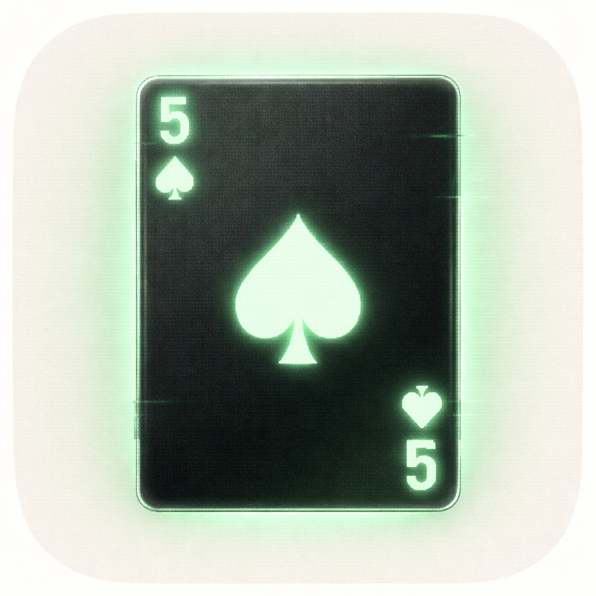

Justin Reid
App engineer, Edinburgh. Previous experience in fintech and experimental medical research apps, including NHS and international contracts.
Projects

A stylized card-game experience with custom rendering, gameplay systems, and rapid issue-to-release execution. Built with a focus on feel, pacing, and visual identity.
Calendar assistant with end-to-end product work spanning app behaviour, API orchestration, and practical automation for real-world schedule workflows.
Turns your Spotify listening history into a wallpaper that updates itself. Native App Intents for Siri and Shortcuts automation, with premium filters and grid customization.
How I work
Small teams, clear scope, no waste. I work closest to the product — across design, code, and release — and do my best work when those things aren't siloed. I've built in regulated environments where quality isn't optional, and on indie projects where shipping is.